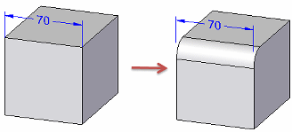
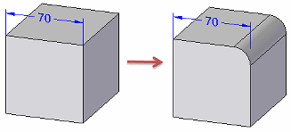
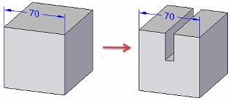
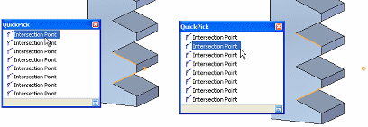

Placing PMI dimensions using intersection points
You can use a model intersection point to place a PMI dimension. Using an intersection point:
-
Makes it easy to add a dimension to a model edge that has been rounded, split, or trimmed.
-
Helps the dimension rebind to the original endpoints when the model edge is rounded, split, or trimmed.
Solid Edge automatically detects the presence of intersection points. You can use the intersection point method when placing any dimension.
You can turn off Intersection Point mode by selecting a dimension command and pressing the I key.
Following are some examples of when you might want to place dimensions using intersection points.
Edge modified by rounding
-

Edge modified by trimming
-

Edge modified by splitting
-

You also can use QuickPick to locate all intersection points—not just the least-distance default—as shown in the following example:

You also can place a dimension using the intersection point of a virtual centerline and the surface of a cylindrical or conical object, including canted, toroid, spherical, and splined shapes. These intersection points are available on demand, without having to invoke Intersection Point mode.
To learn how to use this feature, see the Help topic, Place a PMI dimension using an intersection point.
How do I
Display and edit PMI elementsAdd PMI dimensions and annotations
Select multiple reference elements
Create PMI dimensions from the assembly level
Place a PMI dimension using an intersection point
Set a PMI dimension and annotation plane
Show custom occurrence properties in PMI
Move PMI elements in 3D
Reposition PMI text, lines, and arrows
Copy PMI elements from a sketch or feature
Add or remove PMI elements in a model view
Learn more
PMI dimensions and annotationsPMI edit handles and cursors
Look up more details
Lock Plane commandLock Dimension Plane command bar
Move Dimension command
Add To Model View command
Remove From Model View command